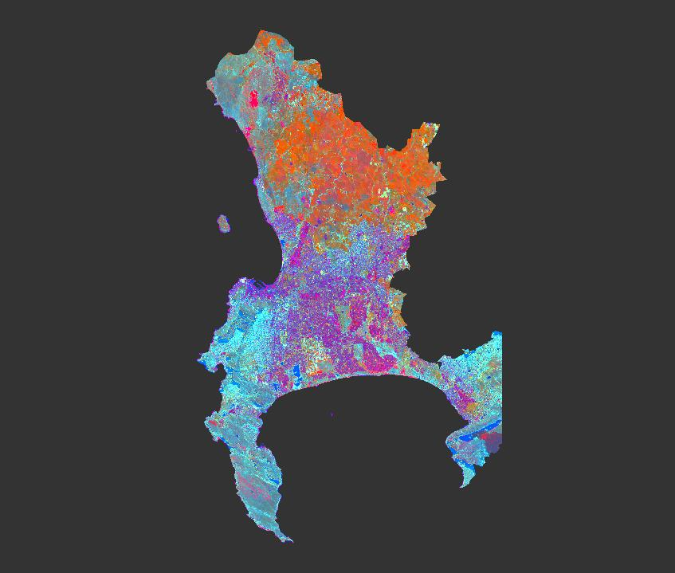
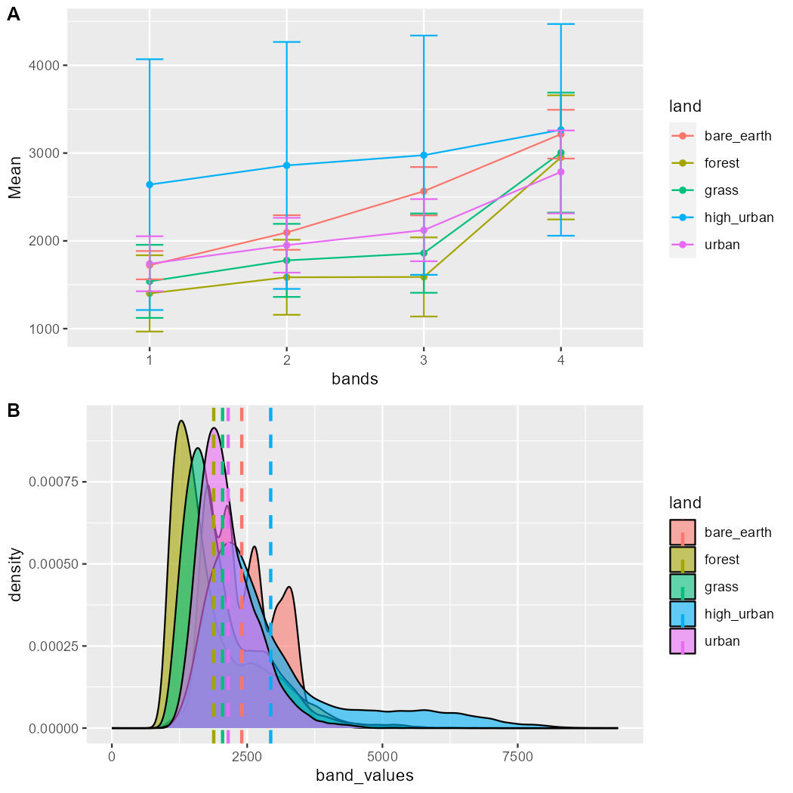

1 Week 1 - An Introduction to Remote Sensing
1.1 Summary
This section will summarize the content of first week of remote sensing course, which is some basic remote sensing knowledge, including how to obtain remote sensing images, image features, etc. Some key points are listed below.
1.1.1 Overview of remote sensing
Remote sensing is a technology that senses and measures information on the earth’s surface over long distances. It is now frequently used to obtain accurate and timely information, and most remote sensing data are analyzed using digital image processing techniques (Jensen, 2015).
1.1.2 Sensor types
Passive: Receive energy reflected from the sun
Active: Actively emits electromagnetic waves and then waits to receive

1.1.3 Electromagnetic radiation(EMR) interacts with Earth’s surface
Energy can be absorbed and transmitted.
Two forms:
Surface scattering
Atmospheric scattering
1.1.4 Big issue caused by scattering
1.1.4.1 Problem
Clouds: Impact on remote sensing applications
1.1.4.2 Solution
Synthetic Aperture Radar (SAR)
It is an active microwave remote sensing technology
It is not limited by weather conditions, cloud cover, or nighttime
Valuable for geological exploration, land use monitoring, disaster assessment
1.1.4.3 Conclusion
The sun’s energy interacts with the Earth’s surface in many ways, affecting the creation and use of data.
1.1.5 Remote sensing data
1.1.5.1 Data formats
Data format: Raster
Common data storage format: GeoTIFF
1.1.5.2 Data resolution
Spatial: The size of the raster cells
Spectral: The number of bands, and each band is usually provided as a separate raster layer
Temporal: The revisit time of the sensor
Radiometric: The ability of a sensor to identify and show small differences in energy
1.1.6 How to select data
Environmental constraints
Research area
Research question
research Fund (cost)
…
Sensor constraints
Size of features
Spectral sensitivity
Date range
Quality of the image
Type of orbit
…
1.1.7 Practical
1.1.7.1 Use Tasseled Cap transformation for analysis
- Tasseled Cap function
\[ \begin{split} Brightness = 0.3037(B2)+0.2793(B3)+\\0.4743(B4)+0.5585(B8)+\\ 0.5082(B11)+0.1863(B12) \end{split} \]
\[ \begin{split} Greeness = −0.2848(B2)−0.2435(B3)\\−0.5436(B4)+0.7243(B8)+\\ 0.0840(B11)−0.1800(B12) \end{split} \]
\[ \begin{split} Wetness = 0.1509(B2)+0.1973(B3)\\+0.3279(B4)+0.3406(B8)\\− 0.7112(B11)−0.4572(B12) \end{split} \]
- Masking and resampling
- Resample bands 2,3,4 and 8 to 20m
- Clip the raster to the City of Capetown polygon
- Result

It can be found from the figure:
- Brightness reflects bare soil, artificial surfaces, bright materials
- Greenness reflects green vegetation
- Wetness reflects moisture
1.1.7.2 Spectral signatures of POIs
Land cover types of POIs:
- Bare earth
- grass
- Forest
- Higher reflective urban
- Lower reflective urban

It can be seen from the results that different POIs have different performances on different bands, and high urban has a larger difference than other POIs. Specific areas can be detected or classified through differences in band values in different areas, or by combining the values of several bands.
1.2 Applications
In the first week of study, I am most interested in Tasseled Cap transformation (TCT). It converts spectral information in remote sensing images into brightness, greenness, and wetness components, which can be applied in many fields.
Specifically, TCT can help extract water bodies by obtaining the greenness and wetness components of remote sensing images, and can reduce the impact of shadows, dense vegetation and buildings (Zhuang and Chen, 2018; Chen et al., 2020, 2022). By considering the characteristics of coastline morphology and the greenness and wetness components, the TCT can also be used to extract coastline information, particularly in areas with high sediment concentration (Chen et al., 2019).One study (Wang and Zhu, 2003) compared the TCT method with a Learning Vector Quantization (LVQ) neural network and a conventional rule-based method for water body extraction from Landsat 4 satellite images. It was found that the error of thresholding on the wetness in the TCT method is too large to be practical for this purpose. This suggests that while TCT can be useful for various remote sensing applications, its effectiveness for water body extraction may be limited under certain conditions or compared to other specialized methods.
Components of TCT, such as brightness, greenness, and wetness, can provide valuable information about the condition and changes in forest vegetation over time (Liu, 2019b, 2019a; Stoyanov, 2022), also monitor the health of the forest (Liu and Liu, 2009). But the TCT parameters need to be recalculated for different sensors or spectral data, enabling more accurate classification of vegetation patches, crop types, and changes in forest health. Moreover, an innovative approach involved modeling post-fire forest regrowth using TCT-derived indicators (Stankova and Avetisyan, 2023). This methodology leverages the TCT to increase the identification of components (soil, vegetation, and moisture) changing during a fire, thereby providing a cost-effective tool for monitoring the recovery of burnt forests.
1.3 Reflections
Overall, the first week was heavy and covered many basic concepts of remote sensing data, but it was not difficult in terms of understanding. These basics were important to me as a beginner in remote sensing because it gave me a clear understanding of the sources and structure of remotely sensed data and laid the foundation for subsequent courses. Although I was a bit overwhelmed when I first came across SNAP as a software, with a little bit of research on remote sensing data, I successfully used SNAP to get satisfactory analysis results. In addition, thanks to the emergence of packages such as stars and terra, it is easier and faster to analyse a large amount of remote sensing data in a unified way using R language, and the results can be presented in a more beautiful way. Therefore, for me personally, I prefer to use R for analyses.